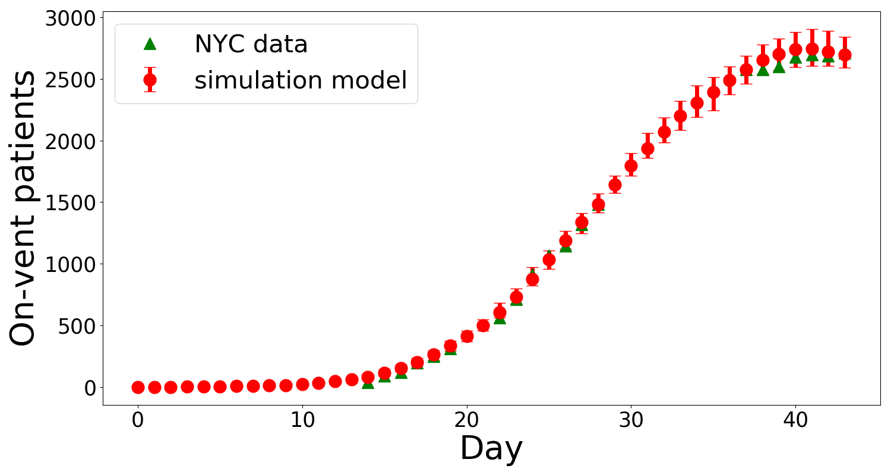

How many ventilators will be needed tomorrow?
Predict number of admissions tomorrow
If you need help with estimation of the number of admissions on the next day, you can use our tool based on the history of admissions.
Please, input data in the following format: Ad-m, Ad-(m-1)..., Ad, where Ad-k is the number of patinets admitted k days ago.
The Ventilator Shortage
Mechanical ventilation is a major component of vital medical support for COVID-19 patients with severe acute respiratory
failure. Many hospitals in the U.S. and other countries have been already experiencing ventilator shortages. Our model
provides these hospitals with meaningful predictions to assist them in the dynamic allocation of ventilators from a central
stockpile.
Our Model
We developed an algorithm that predicts the number of Covid-19 patients who will start to require ventilators. This
algorithm is intended to be utilized by a large hospital or a group of coordinated hospitals (see documentation (link to be
added) for details).
- Based on medical reports and articles with information about course of the COVID-19 we create a simulation model
that is calibrated with New York City's Covid-19 data:

- We predict the number of new patients who require ventilatory support the next day based on two numbers: (1) number
of hospitalized patients not currently ventilated and (2) anticipated number of new hospital admissions on the next day.

- We propose a ventilator ordering and returning policy. In the simulation study under our ventilator order
and return policy, no patients were denied of ventilation and there was no excessive
inventory of ventilators kept at hospitals.